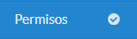
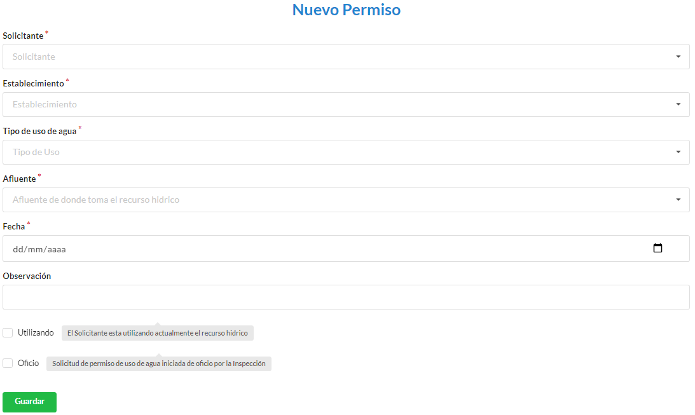
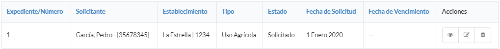
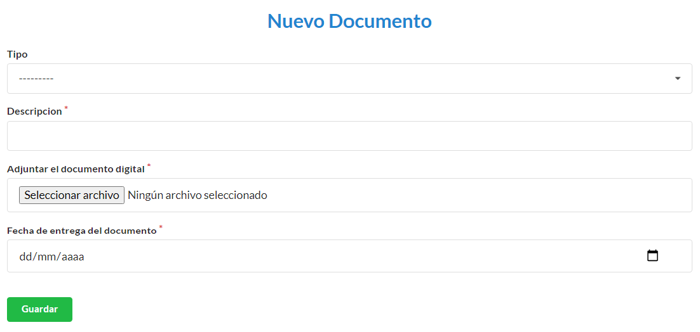
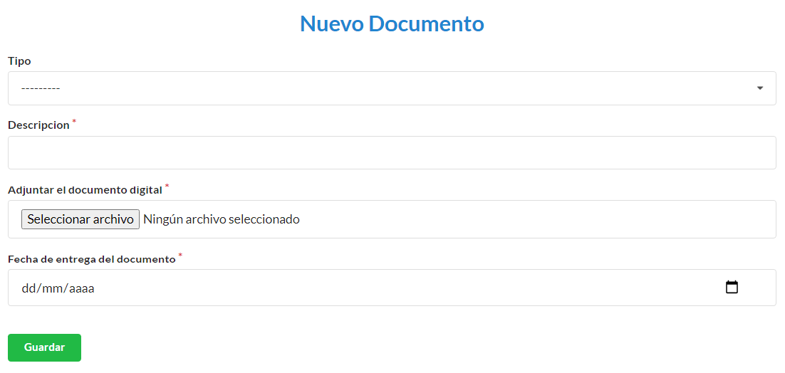
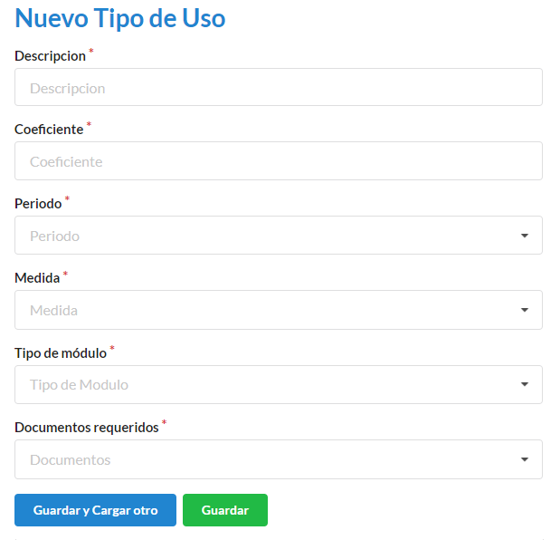

Permiso¶
Comó crear una nuevo permiso¶
Desde el panel principal, podremos ingresar a Permisos.
Luego buscamos el boton de Nuevo permiso.
Para ingresar un nuevo permiso, en la pantalla deberá completar los campos Solicitante, Establecimiento, Tipo de uso de agua, Afluente, Fecha, Observacion, Utilizado u Oficio (en caso de que se este utilizado el recurso, debe seleccionarse Utilizado, en caso de no estar siendo utilizado seleccionar Oficio). Los campos con * son obligatorios. Completados los campos se podra Guardar o Guardar y Cargar otro.
Como gestionar un permiso¶
Para poder continuar el proceso de aprobacion de un permiso, desde el panel principal, podremos ingresar a Permisos, donde visualizaremos el listado de permiso, localizamos el permiso.
Nos dirigimos al icono inspeccionar, para ver en detalle el estado del permiso.
 

Para ingresar un documento, en la pantalla deberá completar los campos Tipo (para este caso, aparecera un desplegable con los documentos faltantes), Descripcion, Archivo (Se nos abrira un explorador de archivos, el cual debemos ubicar el archivo del documento a subir), Fecha del documento (Se registrara la fecha en que fue entregada la documentación)
Completada toda la documentacion requerida, nos encontraremos con este mensaje. El visado es el tramite legal donde se corrobora que el documento presentado sea el correcto.

Para realizar el visado, debemos ir al boton de acción y dirigirnos a Ve Documentación Presentada.

Los documentos que tienen un Circulo color rojo que nos indicaran que aun faltan visar, para poder cambiar la condicion a Visado, debemos precionar el botor Visar.

Los documentos ya visados aparecentan con un Circulo color verde

Cuando la toda la documentacion esta cargada y visada, dentro del persmiso nos encontaremos con un cartel DOCUMENTACION COMPLETA y un boton que nos pedira que ingresemos el numero de expediente. (Este numero sera otorgado por QUIEN LO OTORGA????????)

Para terminar de ingregar el numero de expediente, debemos completar Descripcion, Archivo, Fecha del documento, Numero de expediente

Comó crear un nuevo establecimiento¶
Para ingresar un nuevo establecimiento, en la pantalla deberá completar los campos Dueño (este debe ser el solicitante), Codigo catastral, Superficie (esta sera tomadas en m2), Nombre (nombre del establecimiento), Descripción. Los campos con * son obligatorios. Completados los campos se podra Guardar o Guardar y Cargar otro.

Comó crear un nuevo tipo de uso¶
Para ingresar un nuevo tipo de uso, en la pantalla deberá completar los campos Descripción (este sera el nombre del tipo de uso), Coeficiente (este puede ser un numero real), Periodo (para este caso, aparecera un desplegable con los periodos vigentes), Medida (para este caso, aparecera un desplegable con los periodos vigentes), Tipo de modulo (para este caso, aparecera un desplegable con los tipo de modulos vigentes), Documentos requeridos (para este caso, aparecera un desplegable con los documentos vigentes. Pueden tener mas de 1 documento asignado). Los campos con * son obligatorios. Completados los campos se podra Guardar o Guardar y Cargar otro.
Comó crear un nuevo tipo de documento¶
completar